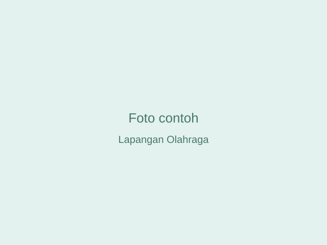
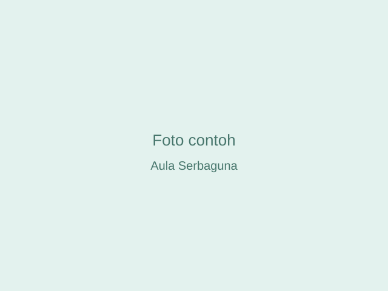
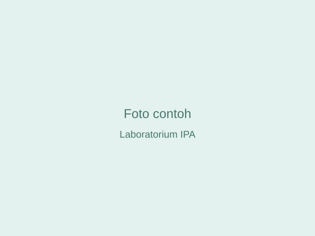
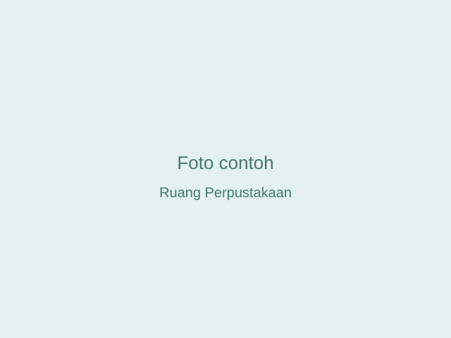

Tentang Kami
Profil Sekolah
Mengenal lebih dekat sejarah, visi, misi, dan struktur organisasi SMP Negeri 5 Kota Kupang.
Sejarah
SMP Negeri 5 Kota Kupang berdiri pada tahun 1985 dan terus berkembang menjadi salah satu sekolah menengah pertama negeri di Kota Kupang. Sejak awal, sekolah ini berkomitmen memberikan pendidikan yang merata bagi anak-anak di lingkungan sekitar.
Seiring waktu, jumlah peserta didik, tenaga pendidik, dan sarana pembelajaran terus bertambah. Kini sekolah membuka diri sebagai pusat kegiatan akademik maupun non-akademik bagi masyarakat.
Visi & Misi
Visi
“Menghasilkan tamatan yang beriman dan bertakwa, berprestasi, terampil, dan berdaya saing tinggi serta berbudi pekerti yang luhur.”
Misi
- Unggul dalam disiplin.
- Unggul dalam perolehan nilai asesmen.
- Unggul dalam perolehan nilai ulangan.
- Unggul dalam lomba kesenian dan olahraga prestasi.
- Unggul dalam kegiatan keagamaan dan sosial kemasyarakatan.
- Unggul dalam Lomba Cerdas Cermat / LAMOJARI.
- Unggul dalam LPIR/PIR.
- Unggul dalam 7K.
Struktur Organisasi

Fasilitas

Lapangan Olahraga

Aula Serbaguna

Laboratorium IPA
